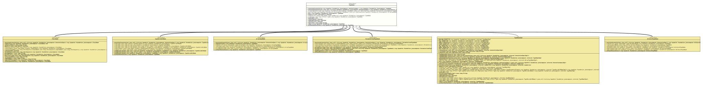

Interface TypeName
- All Known Subinterfaces:
ArrayTypeName,ClassName,ParameterizedTypeName,TypeVariableName,WildcardTypeName
- All Known Implementing Classes:
ArrayTypeNameImpl,ClassNameImpl,ParameterizedTypeNameImpl,TypeNameImpl,TypeVariableNameImpl,WildcardTypeNameImpl
The specification for a representation of any type in Java's
type system, plus void. The implementations of this interface
class are identifiers for primitive types like int and raw
reference types like
String
and
List.
It also identifies composite types like
char[]
and
Set<Long>.
Type names are dumb identifiers only and do not model the values they
name. For example, the type name for java.lang.List doesn't know
about the
size()
method, the fact that lists are collections, or even that it accepts a
single type parameter.
Instances of this class are immutable value objects that implement
equals()
and
Object.hashCode()
properly.
Referencing existing types
Primitives and void are constants that can be referenced directly:
see for example
Primitives.INT,
Primitives.DOUBLE,
and
Primitives.VOID.
In an annotation processor, a type name instance for a type mirror can
be obtained by calling
from(TypeMirror).
In reflection code,
from(Type)
can be used.
Defining new types
New reference types like com.example.HelloWorld can be created
with
ClassName.from(CharSequence,CharSequence,CharSequence...).
To build composite types like char[] and Set<Long>, the
factory methods on
ArrayTypeName,
ParameterizedTypeName,
TypeVariableName,
and
WildcardTypeName
should be used.
- Author:
- Square,Inc.
- Modified by:
- Thomas Thrien (thomas.thrien@tquadrat.org)
- Version:
- $Id: TypeName.java 1085 2024-01-05 16:23:28Z tquadrat $
- Since:
- 0.0.5
- UML Diagram
-

UML Diagram for "org.tquadrat.foundation.javacomposer.TypeName"
{kind=link}
-
Method Summary
Modifier and TypeMethodDescriptionannotated(List<AnnotationSpec> annotations) Creates a new instance for an implementation ofTypeNameas a copy of this one, but with the given annotations added.default TypeNameannotated(AnnotationSpec... annotations) Creates a new instance for an implementation ofTypeNameas a copy of this one, but with the given annotations added.arrayComponent(TypeName type) Returns the array component for the given type name; the return value is empty if the given type is not an array.static Optional<ArrayTypeName> Returns the given type name as an array; the return value is empty if it is not an array.box()booleanstatic TypeNameReturns a type name equivalent to that of the givenTypeinstance.static TypeNamefrom(TypeMirror mirror) Returns a type name equivalent to that from the givenTypeMirrorinstance.inthashCode()booleanChecks whether this type name is annotated.booleanChecks whether this type name represents a box primitive type.booleanChecks whether this type name represents a primitive type.toString()unbox()Creates a new instance for an implementation ofTypeNameas a copy of this one, but without any annotations.
-
Method Details
-
annotated
Creates a new instance for an implementation ofTypeNameas a copy of this one, but with the given annotations added.- Parameters:
annotations- The annotations.- Returns:
- The new instance.
-
annotated
Creates a new instance for an implementation ofTypeNameas a copy of this one, but with the given annotations added.- Parameters:
annotations- The annotations.- Returns:
- The new instance.
-
arrayComponent
Returns the array component for the given type name; the return value is empty if the given type is not an array.- Parameters:
type- The type name.- Returns:
- An instance of
Optionalthat holds the type name of the array component.
-
asArray
Returns the given type name as an array; the return value is empty if it is not an array.- Parameters:
type- The type name.- Returns:
- An instance of
Optionalthat holds the array type name.
-
box
Returns a boxed type if this is a primitive type (likeIntegerforint) orvoid. Returns this type if boxing doesn't apply.- Returns:
- The boxed if necessary, otherwise this.
-
equals
-
from
Returns a type name equivalent to that from the givenTypeMirrorinstance.- Parameters:
mirror- The given type mirror instance.- Returns:
- The respective type name.
-
from
Returns a type name equivalent to that of the givenTypeinstance.- Parameters:
type- The type.- Returns:
- The respective type name for the given
Typeinstance.
-
hashCode
int hashCode() -
isAnnotated
boolean isAnnotated()Checks whether this type name is annotated.- Returns:
trueif it is annotated,falseotherwise.
-
isBoxedPrimitive
boolean isBoxedPrimitive()Checks whether this type name represents a box primitive type. -
isPrimitive
boolean isPrimitive()Checks whether this type name represents a primitive type.- Returns:
trueif this is a primitive type likeint.falsefor all other types including boxed primitives andvoid.
-
toString
-
unbox
Returns an unboxed type if this is a boxed primitive type (likeintforInteger) orVoid. Returns this type if it is already unboxed.- Returns:
- The unboxed type if applicable, or this.
- Throws:
UnsupportedOperationException- This type isn't eligible for unboxing.
-
withoutAnnotations
Creates a new instance for an implementation ofTypeNameas a copy of this one, but without any annotations.- Returns:
- The new instance.
-